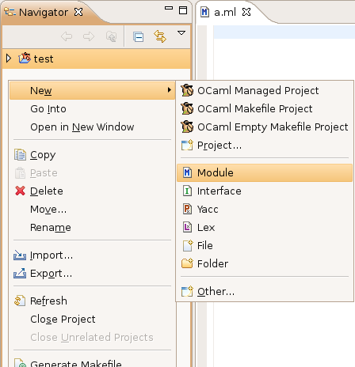
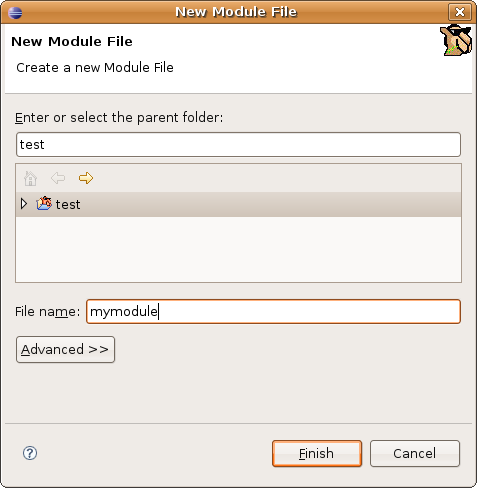

To create a source file or folder in an existing OCaml project (see Creating a new project), right click (or Ctrl + Click on Mac) in the navigator view on a previously created OCaml project (or folder inside this project). Alternatively, you can also click on File > New.
If you are in the OCaml perspective (see Opening the OCaml perspective), you should see the following menu:

From this menu, you can choose among the following resources to create:
Once you have clicked on one of the options, you get the following dialog box:

Type the name you want to give to your new resource (avoid spaces and special characters), and click Finish.
Note: If you chose to create one of the OCaml file types, you don't have to type the extension of the file, it will be automatically added for you.